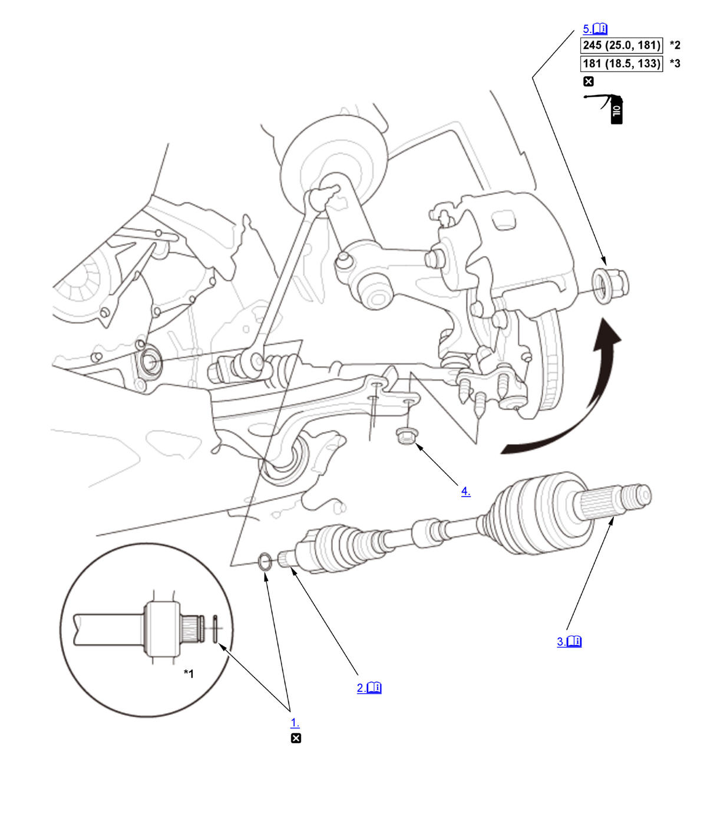

Front Driveshaft Removal and Installation (Except K20C1 (M/T)): Installation: Procedure
NOTE:
Numbered call-outs in figure pertain to list numbers in following procedure.
Fig 1: Exploded View Of Front Driveshaft Components With Torque Specifications For Installation (Except K20C1 (M/T))

Courtesy of HONDA, U.S.A., INC. |
Detailed information, notes, and precautions |
 |
Torque: N.m (kgf.m, lbf.ft) |
 |
Replace |
 |
Engine oil |
| *1 | Intermediate shaft (With intermediate shaft) |
| *2 | 1.5L engine |
| *3 | 2.0L engine |
- Inboard Joint Set Ring - Install
- Inboard Joint - Connect
Right driveshaft (With intermediate shaft) 1. Right driveshaft (With intermediate shaft): Apply 0.5-1.0 g (0.018-0.035 oz) of UM246 (P/N 41211-PY5-305) to the whole splined surface (A) of the right driveshaft. 2. Right driveshaft (With intermediate shaft): After applying grease, remove the grease from the splined grooves at intervals of 2-3 splines and from the set ring groove (B) so that air can bleed from the intermediate shaft.
3. Left driveshaft and Right driveshaft (Without intermediate shaft): Clean the areas where the driveshaft contacts the differential thoroughly with solvent, then dry them compressed air. NOTE: Do not wash the rubber parts with solvent.
4. Insert the inboard end (A) of the driveshaft into the differential (B) or the intermediate shaft (C) until the set ring (D) locks in the groove (E).
NOTE: Insert the driveshaft horizontally to prevent damaging the oil seal.
- Outboard Joint - Connect
1. Apply about 3 g (0.11 oz) of moly 60 paste (P/N 08734-0001) to the contact area (A) of the outboard joint and the front wheel bearing.
NOTE: The paste helps prevent noise and vibration. - Lower Arm Ball Joint - Connect
- Spindle Nut - Install
1. Use a drift to stake the spindle nut shoulder (A) against the driveshaft. - Front Wheel - Install
- Driveshaft - After Install Check
1. Turn the wheel by hand, and make sure there is no interference between the driveshaft and surrounding parts. - Transmission Fluid - Refill
- Wheel Alignment - Check
- Test Drive - Check